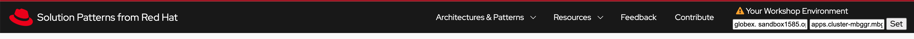

Solution Pattern: App Connectivity with Policy-as-Code
See the Solution in Action
1. Prerequisites
To provision the demo you will perform the following steps - each of which is explained in detail in the next sections:
-
You will need an OpenShift cluster with
cluster-adminprivileges. This solution pattern has been tested on OpenShift 4.15 and 4.16 -
Ensure you have the tools
ocandansibleinstalled in your local environment such as your laptop -
Access to AWS Route53 or Google Cloud DNS to be able to create new domain names
1.1. CLI tools
To check if you have the cli tools, you can open your terminal and use following commands:
If you can’t see kubernetes.core collection listed, you can install it with ansible-galaxy:
1.2. Create Managed Zone on AWS
-
In AWS Route53 add a hosted zone as a subdomain (for example, managed.mytopdomain.com) for the applications that you want to manage and secure with Connectivity Link.
-
Refer to the the AWS documentation on Route53 for instructions on how to setup the hosted zone.
-
Make sure you to create NS records in the top domain hosted zone in order to be able to route traffic to the subdomain, as explained in this article.
1.3. Personalize the instructions
To personalize the rest of the instructions to your OpenShift environment:
-
At the top-right of this page enter the following information under the Your Workshop Environment section
-
MANAGEDZONE as per the new Managed Zone that you created in the previous step
-
Subdomain to match your OpenShift cluster
-
-
Press enter or click on the Set button
 -
The menubar and the rest of this walkthrough guide will be updated with the Managed Zone name and the subdomain as shown below

|
The subdomain would look something like this |
2. Platform Setup
This section is typically performed by a Platform Engineer persona.
The primary goal of a Platform Engineer is to deploy a Gateway that provides secure communication and is protected and ready for use by application development teams to deploy their service endpoints or APIs. This gateway should be protected and secured with global rate limiting and auth policies.
In this demo, the deployment script uses ArgoCD to:
-
Install Red Hat Connectivity Link (Kuadrant) operator
-
Setup a ManagedZone for DNS configuration.
-
Define a TLS issuer for TLS certificates for secure communication to the Gateways.
-
Create a Gateway (based on Istio gateway) with a wildcard hostname based on the root domain.
-
Kuadrant Custom Resources (CRs) including various policies: DNS, TLS.
2.1. Get the deployment scripts
-
Login to your OpenShift cluster as cluster-admin (because a number of operators will need to be installed)
-
Click on the username on the top right hand, and then click on Copy login command. This will open another tab and you will need to login again
-
Click on Display token link, and copy the command under Log in with this token. This will look like this
-
Clone the ansible script
git clone https://github.com/rh-soln-pattern-connectivity-link/connectivity-link-ansible
-
Open the
inventories/inventory.templatefile and update the variables. Save the file.Click for details of inventory.template file
ocp4_workload_connectivity_link_aws_access_key=<AWS_ACCESS_KEY_ID> ocp4_workload_connectivity_link_aws_secret_access_key=<AWS_SECRET_ACCESS_KEY> ocp4_workload_connectivity_link_aws_managed_zone_id=<Managed Zone ID - created in the previous step> # E.g.: Z12345677XYZ0FF0GBHIJ0 ocp4_workload_connectivity_link_aws_managed_zone_domain=<Managed Zone domain - created in the previous step> # E.g.: managed.sandbox1585.opentlc.com ocp4_workload_connectivity_link_aws_managed_zone_region=<Managed Zone region - default region of your AWS setup> # E.g.: eu-central-1 ocp4_workload_connectivity_link_ingress_gateway_tls_issuer_email=<your address email for letsencrypt> ocp4_workload_connectivity_link_gateway_geo_code=<gateway geo code> # E.g.: EU or US
2.2. Run the deployment scripts
Prerequisites checklist
|
Before running the following Ansible script, check if you have done these prerequisites
|
Run the Ansible script which will setup the RHCL Operator, Istio and Kuadrant system workloads
cd operator-setup
ansible-playbook playbooks/ocp4_workload_connectivity_link.yml -e ACTION=create -i inventories/inventory.template2.3. What’s next
In the next section, we’ll go through the Platform Engineer’s Workflow